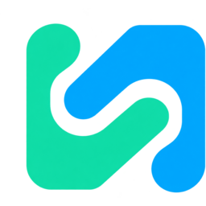
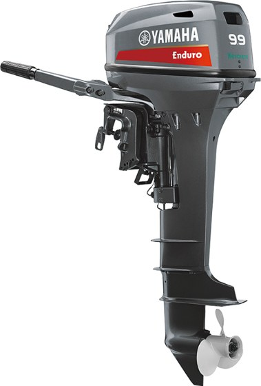
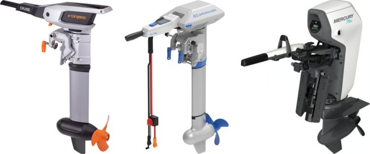
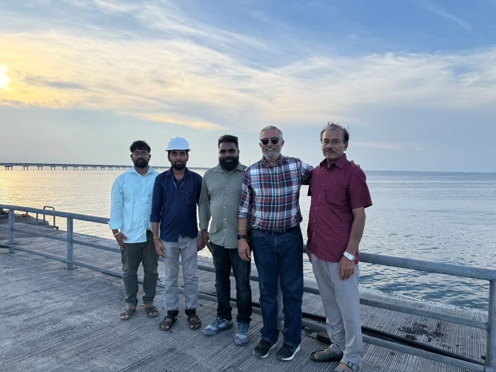
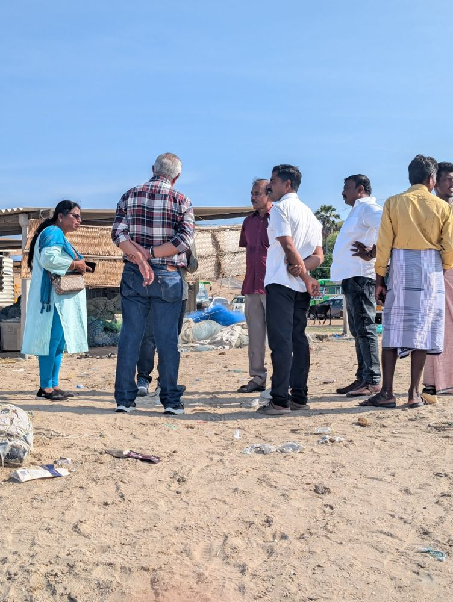
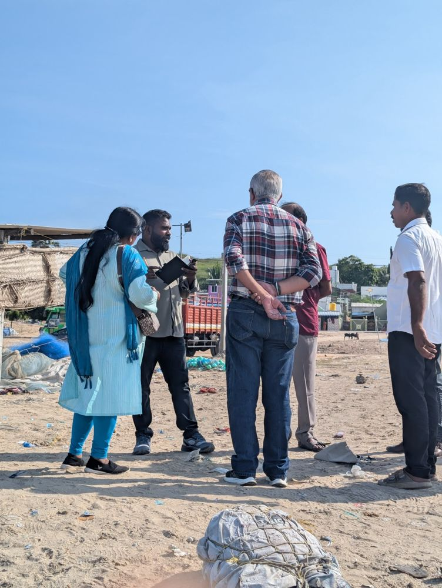
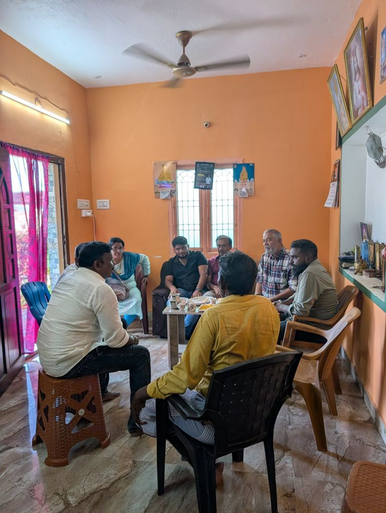

Coastal fishing · Tamil Nadu
Fish at sea.
Charge on shore.
Electric power for Tamil Nadu’s fishing boats.
Fishermen Energy Hub

SimtestlabIllustrative photo · Tamil Nadu coast
01 · A fisherman’s day
The engine runs for only about 3 hours a day
Head out, fish with the engine off, head back. The rest of the day the boat rests on shore, which leaves plenty of time to recharge a battery.
Based on field-reported operating data. The pilot will record real trip times.
02 · The problem today
Kerosene engines are costly, dirty and wasteful
Of every 8 litres burned, only about 1 actually pushes the boat.
The rest is lost as heat, noise and smoke.
Estimates from field-reported fuel use and our engineering study of the 9.9 hp kerosene outboard. The pilot will measure them.
03 · The idea
Same boat. Same tiller. A new electric engine.


The battery sits low in the middle of the boat. The second engine already on board stays as a backup to get home.
04 · How it works
From sunshine to sea in four simple steps
Pilot first, hub later. During the pilot the boats can charge from the ordinary power supply. The solar energy hub is the next step once the boats have proved themselves.
05 · Where we start
Manapad: our pilot village
A fishing village on the Gulf of Mannar coast in Thoothukudi District, with a busy fleet of fibreglass boats.
- Possible solar and battery area
- Boat jetty with charging points
- Boats’ way out to sea
06 · The pilot
Three boats. Three set-ups. Real fishing.
Each boat tries a different combination side by side in real sea conditions, so we learn what works best before going bigger.
Set-ups shown are examples of what we will compare. The final three are chosen after measuring the boats.
07 · Learn together
Fishermen test it. Fishermen shape it.
Whose feedback counts
- Fishermen and boat crews
- Boat owners and local boat builders
- Fisheries College experts
- Government departments
If the fishermen don’t like it, it doesn’t pass. Their verdict decides the test.
08 · Timeline
From first boat to rollout in four months
No lost fishing days. Crews keep fishing as normal throughout the pilot, and the boat’s second engine stays on board as a backup.
09 · What changes
Every trip: more affordable, cleaner, quieter
Running cost per trip
Carbon dioxide (CO₂) per trip
Estimates for one 9.9 hp engine replaced, about 3 hours of running per trip, electricity at ₹8 per unit. CO₂ for the electric motor counts today’s grid power; solar charging lowers it further. The pilot replaces every estimate with measured data.
10 · Who benefits
Good for fishermen, government and the sea
Fishermen
- Easier everyday fishing operations
- Practical savings on fuel costs
- A more sustainable livelihood
Government
- A tested model that can scale
- Supports sustainable fisheries and coastal development
- Evidence for future policy
Environment
- Less dependence on fuel-powered engines
- No oily exhaust in coastal waters
- Cleaner, more responsible fishing
11 · On the ground
Built with the people who know the sea
Field visits with Dr. Kalaiyarasan and the Fisheries College team shaped this plan from the start.




12 · The bigger picture
Start at Manapad. Grow across Tamil Nadu. Then India.
- 1ManapadProve it with three boats and real fishermen.
- 2Tamil NaduAdapt the model to fishing villages along the state’s coast.
- 3IndiaA model that fishing communities across the country can adopt.
- PracticalScalableSustainable
Hollow circles: possible future villages, for illustration only
The ask
Let’s start at Manapad.
Thank you
Coast photos: Sriram Jagannathan (CC BY-SA 4.0), melanie-m/Flickr (CC BY 2.0), Edwin Singh (CC BY-SA 4.0), via Wikimedia Commons · Outboard photos: Yamaha Motor, Torqeedo, ePropulsion, Mercury dealer · Satellite imagery ©2026 Airbus, Maxar Technologies; Map data ©2026 Google